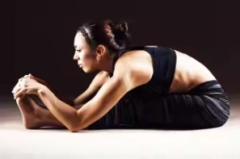
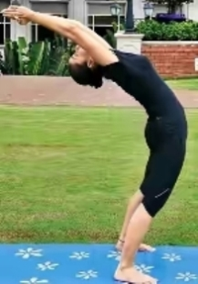

1. Slow Stretching Yoga Asana for Neck:
To start with yoga asanas, one should get started with the basic exercises first like slow neck stretches. It is recommend to perform few repetitions of this yogic slow neck stretches as it eases the neck tension and strain. This basic yoga pose can be easily done standing anywhere, even sitting on your chair!
Read More2. Full Body Yoga Tadasana – The Mountain Pose

Tadasana is also known as mountain pose and it is one of the best yoga asanas. Practicing this yogasana regularly every morning gives a good massage to our hands, back, spine and the whole body. This is the most recommended asana for increasing height as well.
Read More3. Standing Forward Fold Pose – Uttanasana Yoga Benefits:
Uttanasana is a forward bending pose which relaxes us from stress and anxiety. And with the arm bind, this standing forward bend variation provides a deep shoulder stretch. By binding the hands, it also allows the arms to stretch and tighten the shoulders to relax. It also brings some blood back to the brain while giving a great stretch to the legs.
Read More4. The Triangle Pose – Trikonasana Yoga for Pregnancy:
This trikonasana exercise is stretches and strengthens the muscles along with improving the functions of our body. This is a good yoga exercise for pregnant women. It helps in reducing blood pressure, stress and anxiety and also improves the functions of the blood through the entire body. This simple yogasana improves our balance & concentration power. this asana also removes fats from waist and thighs.
Read More5. Bow Pose – Dhanurasana Yoga for Reducing Fat:
Dhanurasana is very effective in weight loss program. this yoga pose helps in reducing the belly fat very easily. It strengthens the ankles, thighs, groins, chest and abdominal organs and spinal cord. This yoga posture improves the functions of kidney, pancreas, liver, small and big intestine. It also acts as a stress reliever and gives flexibility to the back. It improves the function of digestion and removes gases.
Read More6. List of Yoga Surya Namaskar (Sun Salutation):

A full round of Surya namaskar is considered to be two sets of the twelve poses, with a change in the second set where the opposing leg is moved first. It improves flexibility, strength, balance, reduces stress and anxiety, reduces symptoms of lower back pain, shortens labor and improves birth outcomes, and reduces sleep disturbances and hypertension. It also increases energy and decreases fatigue and are very beneficial for asthma & chronic diseases. This is a basic yogasana set to stretch your legs and reduce weight.
Read More7. Kapalbhati Pranayama Yoga Pose with More Benefits:
Kapalbhati pranayama yoga is the most recommended breathing exercise which cures our stomach disorder completely and loses weight. Practicing 5 minutes kapalbhati pranayama regularly removes the toxins and increases metabolism. It also cures constipation, acidity, diabetes, Asthma and all kinds of Respiratory troubles, sinus and even hair loss. This yoga pose effective in weight loss (mainly belly fats). This is superb yoga pose for ever
Read More8. Bound Angle Pose – Baddha Konasana Yoga for Beginners:
This Pose of yoga for beginners helps to open up the hips and ease sciatica discomfort that can be made worse by sitting for long periods. The sciatic nerve starts in the lower back and runs down both leg, and sciatic nerve pain can occur when the nerve is somehow compressed. Long commutes and sitting for long periods of time exacerbates it.
Read More9. Relaxing Yoga Asana – Eagle Twist Yoga:

This yoga asana helps in relaxing and it also an excellent way to increase side-to-side spinal flexibility. With regular practice of this yoga exercise every day one can relieve pain in the lower belly and lower back.
Read More10. Headstand Pose – Sirsasana Yoga Pose for Better Health:
With regular practice of this yoga posture it cures insomnia (sleeping disorder), spine problems and also improves concentration powers & mental balance. It increases the blood circulation in brain and improves the brains functions and memory. Even people suffering from liver disease, poor blood circulation and headache should perform this yoga asana regularly.
Read More11. Benefits of Yoga Sarvangasana Pose:

This yoga posture strengthens and cures back pain, improves resistance power of the body, keeps our face bright and removes dark circle and those suffering from sleep disorder it promotes deep restful sleep. It helps in weight loss when practiced on a regular basis. It also improves blood circulations, functions of digestion, controls the blood sugar level and corrects the improper functioning of pancreas.
Read More12. Paschimottanasana Yoga Pose (Forward Bend Pose):
Paschimottanaasana covers the stretching of the whole body from our head to heels. This asana is recommended especially for women after delivery to reduce belly fat and toning the abdominal pelvic organs. It strengthens the back muscles as well as very useful for increasing height. It stretches the spine and brings more flexibility in our body.
Read More13. Plough Pose – Halasana Yoga Pose Benefits:
Halasana is also known as Plough pose which strengthens our back muscles and gives flexibility. It cures indigestion and constipation as well as reduces stress. It stimulates the abdominal organs and cure abdominal problems. People suffering from diabetes should do this regularly. It helps to make spinal cord strong and flexible, strengthens the abdominal muscles, reduces stress, and cures the symptoms of menopause.
Read More14. Half Plough Pose – Ardha Halasana Benefits for Health :
Half Plough Pose is similar to Uttanpadasana which is good for improving the functions of abdominal organs. This easy yoga asana stimulates abdominal organs very fast and cures constipation and indigestion. It also reduces belly fats and tones the thigh and hip muscles overall abdominal muscles. It cures stomach disorders and improves digestion, appetite, removes gases and is useful to cure arthritis and lumbar spondylitis
Read More15. Cobra Pose – Bhujangasana Yoga for Lose Weight:
Bhujangasana (cobra pose) gives a excellent result for those who want to lose weight and increase metabolism. This pose improves the function of liver, kidney, pancreas and gall bladder. It cures insomnia (sleeping disorder), spine problems, indigestion and constipation naturally. Those suffering from liver disease, headache, poor blood circulation, can be cured with this asana.
Read More16. Pavanamuktasana Yoga Pose with Benefits (Wind Removing Asana):
Pavanamuktasana is really effective in removing gases from the stomach and improving the digestive system. This asana is very good for all the abdominal organs; it also cures acidity and reduces fat. It also strengthens back muscle and cures back pain. For getting a flat stomach, one should perform this asana on a regular basis. This is one of the simplest yoga poses for beginners.
Read More17. The Raised-Leg Pose – Uttana Padasana Yoga Posture:
Uttana padasana, the raised leg pose is beneficial for those having back pain and stomach disorder. It is good for strengthening the abdominal muscles. We can practice this asana by raising one leg at a time also. For getting flat and strong abs this asana works as a wonder. It is helpful for those who suffer from gas problems, arthritis pain, heart problems and waist & back pain.
Read More18. Bridge Pose – Setu Bandhasana Yoga Pose:
We generally forget about doing any exercise meant for strengthening our legs as we care more on our upper body part appearance. But we spend most of the hours on our legs only, so we should start workout meant for strengthens our legs. This pose, setu bandhasana strengthens the legs, back neck and chest. It provides great balancing power to our body.
Read More